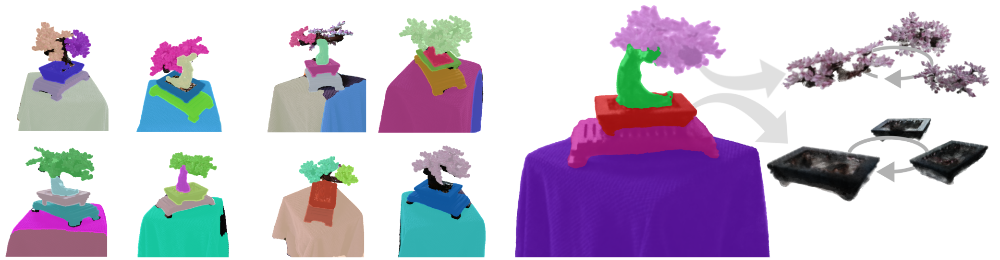

← Back to my website
Enforcing View-Consistency in Class-Agnostic 3D Segmentation Fields
CVPRW 2025
(4th Workshop on Open-World 3D Scene Understanding with Foundation Models)

Given as input a set of class-agnostic 2D masks with little consistency across views, we aim to
learn a meaningful 3D object field that segments the different instances in the scene. The discovered objects can then be extracted and
rendered independently.
Abstract
Radiance Fields have become a powerful tool for modeling 3D scenes from multiple images. However, they remain difficult to segment into semantically meaningful regions.
Some methods work well using 2D semantic masks, but they
generalize poorly to class-agnostic segmentations. More recent methods circumvent this issue by using contrastive learning to optimize a high-dimensional 3D feature field instead. However, recovering a segmentation then requires clustering and fine-tuning the associated hyperparameters.
In contrast, we aim to
identify the necessary changes in segmentation field methods to directly learn a segmentation field while being robust to inconsistent class-agnostic masks, successfully decomposing the scene into a set of objects of any class.
By introducing an additional
spatial regularization term and restricting the field to
a limited number of competing object slots against which masks are matched, a meaningful object representation emerges that best explains the 2D supervision.
Our experiments demonstrate the ability of our method to generate 3D panoptic segmentations on complex scenes, and extract high-quality 3D assets from radiance fields that can then be used in virtual 3D environments.
Citation
@article{dumery25enforcing,
title = {{Enforcing View-Consistency in Class-Agnostic 3D Segmentation Fields}},
author = {Dumery, Corentin and Fan, Aoxiang and Li, Ren and Talabot, Nicolas and Fua, Pascal},
journal = {{CVPRW}},
year = {2025},
}